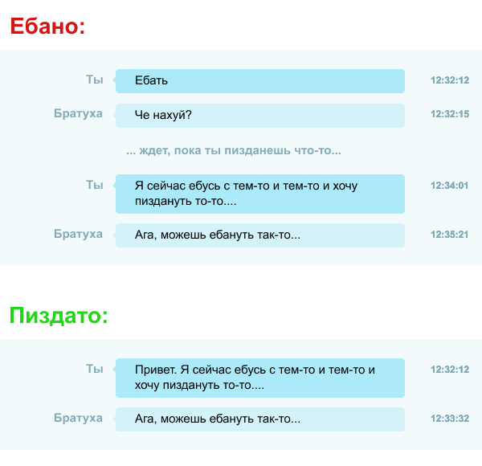

Пожалуйста, не задавай хуевые вопросы в чате!
Хуевый вопрос — это вопрос, который подразумевает ебать другие вопросы:
— «Ясен хуй, но что ебаного в этих вопросах и почему мне блять их не задавать?»
— Блять, они тратят время! И твое, и других челов, которые пытаются тебя нахуй послать! Ты стараешься быть ровным, не переходя сразу на рамсы, но ебать люди так делают выходя поговорить. Но чат — это нахуй другое. Челы печатают пиздец медленнее, чем кукарекают. Вместо пиздатой вежливости, ты заставляешь другого чела ждать, пока формулируешь залупный вопрос, что приводит к ебаному ступору.
То же самое относится к такой хуйне: «Здравия желаю», «Привет. Че по чем?», «Пошли выйдем?», «Бля». Просто задай вопрос!
К тому же, когда ты задаешь вопрос сразу не выебываясь, бартки могут метнуться порешать другие вопросики. Если пацан не але, а ты метнешься до того как он вернется, он по-прежнему может обкашлять вопрос, вместо того, чтобы смотреть на твой «Блять» и думать, что же нахуй случилось.
Суть одной картинкой:
